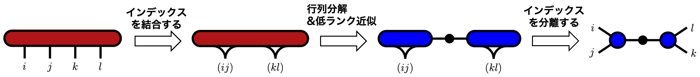

Method
テンソル分解
テンソル分解は，高階テンソルをより小さなテンソルの縮約として表す操作です． 行列の低ランク近似を多次元配列へ拡張するための基本的な手続きであり， テンソルネットワークを構成するための入口になります．
考える問題
例として，4 階テンソル $T_{ijkl}\in\mathbb{R}^{d_i\times d_j\times d_k\times d_l}$ を， 2 つの 3 階テンソルへ分解することを考えます． 目標は次のような形です．
新しく現れるインデックス $\alpha$ は，2 つのテンソルをつなぐ仮想的なインデックスです． その次元 $\chi$ はボンド次元と呼ばれ，どれだけ多くの情報を分解後のテンソル間に残すかを決めます．

インデックスの結合
テンソル分解では，まず高階テンソルを行列に並べ直します． 複数のインデックスをまとめて 1 つの大きなインデックスにする操作は， インデックスの結合，あるいは unfolding と呼ばれます． ここでは $(i,j)$ と $(k,l)$ をそれぞれ結合して， 4 階テンソルを行列 $T_{(ij)(kl)}$ として見ます．
これは要素を捨てる操作ではなく，多次元配列の要素を 2 次元的に並べ直す操作です． たとえばインデックスを 1 から数えるなら，次のような対応を使えます．
より多くのインデックスを結合する場合も，同じ考え方で 多重インデックスと 1 つの大きなインデックスを対応させます [1]．
行列分解を行う
次に，得られた行列 $T_{(ij)(kl)}$ に対して行列分解を行います． ここでは 行列の低ランク近似 と同じく，SVD を用いて説明します．
$D$ は非ゼロ特異値の数です． 特異値を大きい順に並べ，重要度の低い後ろの特異値を捨てると， ランク $\chi$ の近似が得られます．
ここで $A_{(ij)\alpha}=\widetilde{U}_{(ij)\alpha}$， $B_{\alpha(kl)}=\sigma_{\alpha}\widetilde{V}^\dagger_{\alpha(kl)}$ と置き直すと，行列は 2 つの小さな行列の積として表せます．
テンソルへ戻す
最後に，結合していたインデックス $(ij)$ と $(kl)$ を元のインデックスへ戻します． これにより，4 階テンソルを 2 つの 3 階テンソルの縮約として表すことができます．
この式は低ランク近似を含むため，厳密な等号ではなく近似です． 誤差は捨てた特異値に由来します． $\chi$ が十分小さくてもよい近似が得られる場合には， 元のテンソルを少ないパラメータで表現できます．
テンソルネットワークへの接続
上の分解を繰り返すと，高階テンソルを複数の小さなテンソルの列や網目として表せます． これが テンソルネットワーク の構成に直接つながります． 特に 1 次元鎖状に分解していくと Tensor Train (TT) 形式が得られます [2]．
ここでは SVD を使いましたが，目的によっては QR 分解や LU 分解を用いることもあります． 低ランク近似をしたい場合は SVD が自然ですが，テンソルネットワークの正規化や掃き出し計算では QR 分解が便利な場面もあります．
参考文献
このページは，修士論文の第3章をWeb向けに整理したものです． 修士論文PDFは こちら から確認できます．
- S. Dolgov and R. Scheichl, SIAM/ASA Journal on Uncertainty Quantification 7, 260 (2019).
- I. V. Oseledets, “Tensor-Train Decomposition,” SIAM Journal on Scientific Computing 33, 2295 (2011).